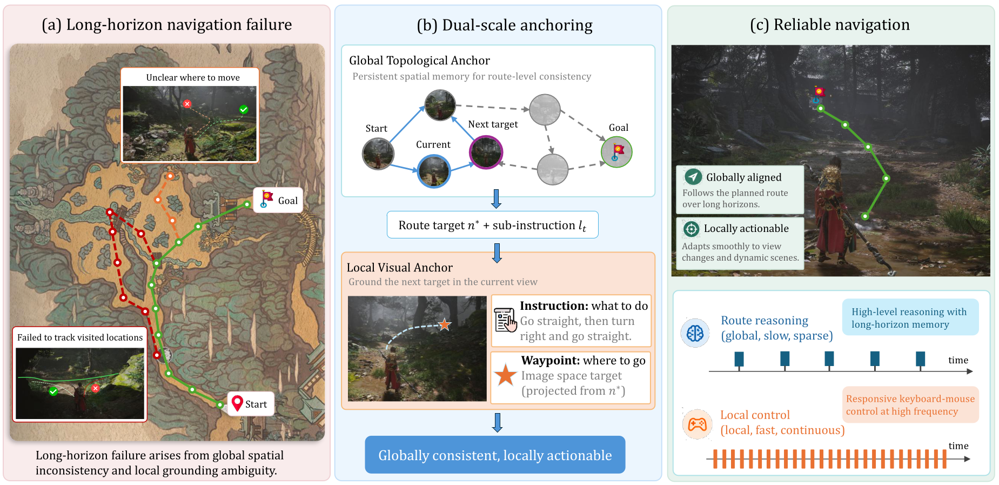
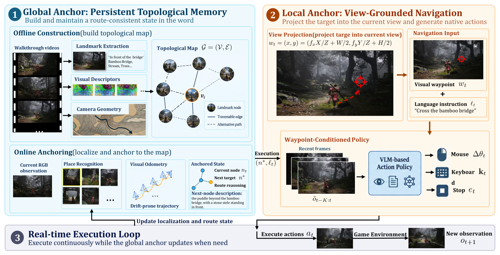
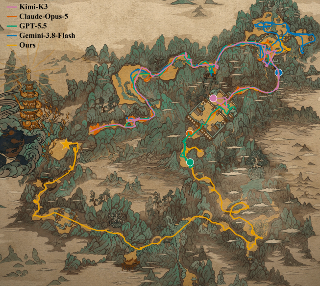
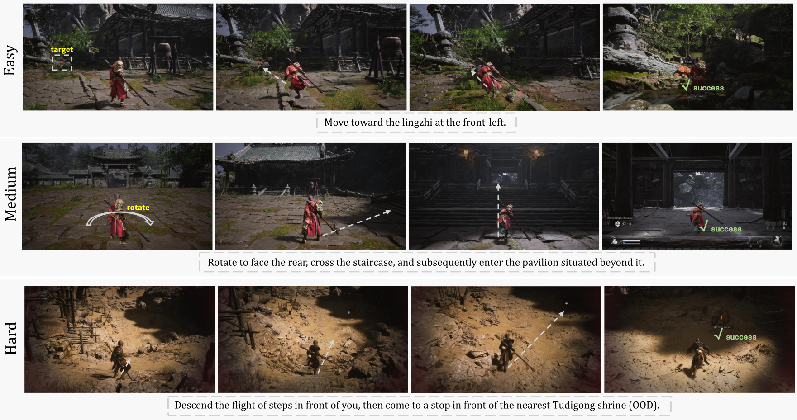
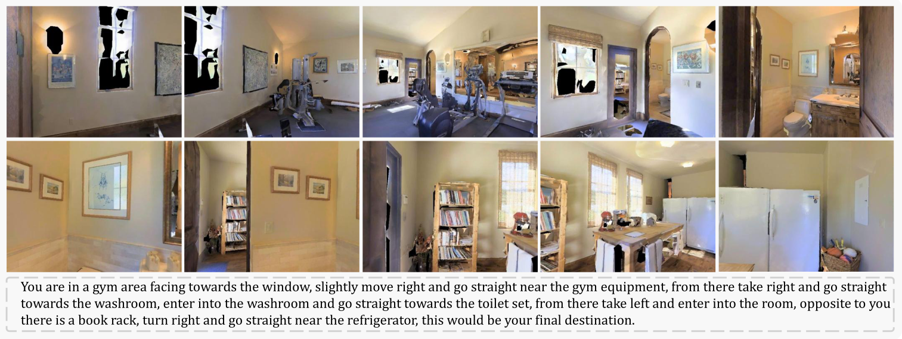
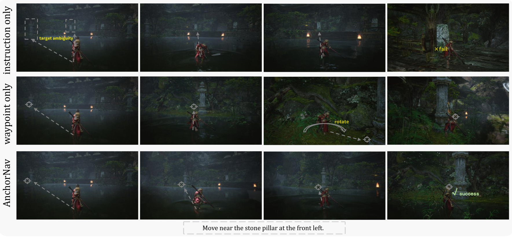

* Project leaders. † Corresponding author.
Starting from the Chapter 1 spawn point in Black Myth: Wukong, the agent has to reach the boss arena with no human intervention. Every step is a native keyboard or mouse action issued from rendered frames. A skilled player finishes this route in about 20 minutes. The recording below is a full-map run, trimmed to 43 minutes.
Playback speed defaults to 1.5×. The control bar can still change it.
Clips are shown one at a time. Easy and medium clips are Chapter 1 instructions. Hard clips are out-of-domain chapters.
Case 11 / 5
Playback speed defaults to 1.5×. The control bar can still change it.
Recent advances in multimodal agents have steadily improved autonomous game-playing, yet reliable long-range navigation in photorealistic 3D games remains challenging because of open terrain, extended horizons, and the absence of privileged localization. AnchorNav is a vision-language navigation framework built around two complementary anchors. The local visual anchor projects the next navigation target into the current view as a 2D waypoint, which guides a waypoint-conditioned visuomotor controller together with a language sub-instruction. The global anchor is a persistent topological memory: visual place recognition periodically re-anchors visual odometry to places the agent has already established. In photorealistic 3D games, AnchorNav completes long-horizon navigation, and it remains competitive on RxR under the VLN-CE protocol.

(a) Failure comes from two places: the agent loses track of where it has been, and the next route target is ambiguous in the current view. The map is drawn only for illustration and is not given to the agent. (b) AnchorNav keeps a persistent global topological anchor and projects the next target into the image as a local waypoint. (c) Slow route reasoning and fast keyboard–mouse control then run on separate timescales.

The global anchor keeps a topological memory, localizes the agent, and selects the next route node. The local anchor projects that node into the current view as a waypoint and, with a language sub-instruction, turns it into keyboard and mouse actions.
We evaluate four tracks: a long-horizon boss route, short-horizon instruction following at three difficulties, a reference comparison on RxR, and ablations of the memory and of the two interface channels. Training video is 350 hours of Chapter 1 gameplay with synchronized keyboard and mouse actions.
Each run is capped at two hours, and every method is tried eight times. General-purpose VLMs receive a navigation map in the prompt. AnchorNav instead follows the topological memory built from walkthrough video.
PCR is route coverage. PCR@15 is coverage within 15 minutes. PCR-F is final coverage averaged over runs. RVR is the share of progress that is later retraced. TTS is averaged over successful runs only.
| Method | PCR@15 ↑ | PCR-F ↑ | RVR ↓ | Succ. ↑ | TTS (min) ↓ |
|---|---|---|---|---|---|
| GPT-5.5 | 9.3 | 47.6 | 45.5 | — | — |
| Claude-ops5 | 4.3 | 44.0 | 42.9 | — | — |
| Gemini3.8flash | 14.2 | 31.2 | 38.5 | — | — |
| kimi-k3 | 4.4 | 39.3 | 40.0 | — | — |
| AnchorNav | 30.3 | 96.9 | 37.0 | 62.5 | 62.29 |


One easy, one medium, and one hard instruction. The hard example is out of the Chapter 1 collection.
SR and OSR are percentages. OSR counts arrivals in the goal vicinity, including runs that do not stop correctly. Higher is better for every column.
| Method | Easy | Medium | Hard | |||||||||
|---|---|---|---|---|---|---|---|---|---|---|---|---|
| SR | OSR | SPL | nDTW | SR | OSR | SPL | nDTW | SR | OSR | SPL | nDTW | |
| General-purpose VLMs | ||||||||||||
| Kimi3 | 42.2 | 61.4 | 0.391 | 0.440 | 24.4 | 33.6 | 0.236 | 0.402 | 24.0 | 33.2 | 0.230 | 0.387 |
| Gemini-3.1-Pro | 50.6 | 83.6 | 0.467 | 0.458 | 35.6 | 49.2 | 0.346 | 0.465 | 29.6 | 48.4 | 0.283 | 0.452 |
| GPT-5.5 | 39.8 | 76.8 | 0.365 | 0.386 | 23.6 | 40.4 | 0.195 | 0.324 | 30.0 | 57.6 | 0.264 | 0.393 |
| Trained on the same demonstrations | ||||||||||||
| DualVLN | 15.4 | 36.2 | 0.152 | 0.192 | 12.0 | 19.6 | 0.120 | 0.050 | 10.8 | 38.4 | 0.098 | 0.305 |
| ActiveVLN | 48.2 | 62.4 | 0.482 | 0.487 | 22.8 | 36.0 | 0.214 | 0.442 | 15.2 | 28.4 | 0.144 | 0.401 |
| AnchorNav | 53.8 | 77.2 | 0.502 | 0.508 | 47.6 | 50.0 | 0.439 | 0.547 | 38.0 | 49.2 | 0.351 | 0.533 |
This track freezes the route target, so the remaining errors are grounding and execution. Easy tasks are atomic. Medium tasks require recognizing a landmark and acting at the right moment. Hard tasks come from chapters outside the Chapter 1 collection. Each level has 50 tasks and five trials. AnchorNav is best on success, SPL, and nDTW at every level.

One RxR episode. The instruction walks from the gym equipment through the washroom and ends at the refrigerator.
An episode succeeds when the agent stops within 3 m of the goal. NE is in meters. Baseline numbers are quoted from prior work and were not rerun with this adapter.
| Method | NE ↓ | SR ↑ | SPL ↑ | nDTW ↑ |
|---|---|---|---|---|
| Seq2Seq | 12.1 | 13.9 | 11.9 | 30.8 |
| NaVILA | 6.77 | 49.3 | 44.0 | 58.8 |
| UniNaVid | 6.24 | 48.7 | 40.9 | — |
| StreamVLN | 6.22 | 52.9 | 46.0 | 61.9 |
| ActiveVLN | 5.84 | 50.7 | 41.2 | 58.1 |
| AnchorNav | 5.51 | 61.65 | 42.12 | 52.56 |
Bold = best | Underline = second best
On RxR English val-unseen, the agent sees only first-person RGB and is adapted to the VLN-CE action set. The topological memory is built from the training split only, so this track does not measure memory in unseen scenes. AnchorNav is best on navigation error and success. StreamVLN remains best on SPL and nDTW. The comparison is a reference for arrival, not a claim of better paths.

Same instruction, three interfaces. Instruction-only confuses similar pillars. Waypoint-only keeps moving. Both together stop at the stone pillar.
PCR@15 uses a 15-minute budget. Instruction-following metrics are macro-averaged over 14 instructions and 10 runs. Higher is better throughout.
| Configuration | PCR@15 | SR | OSR | SPL | nDTW |
|---|---|---|---|---|---|
| (A) Without memory | 7.50 | 46.9 | 53.8 | 0.444 | 0.551 |
| (B) Instruction only | 16.9 | 53.6 | 69.2 | 0.513 | 0.624 |
| (C) Waypoint only | 21.4 | 36.9 | 71.5 | 0.253 | 0.582 |
| (D) Waypoint + instruction | 32.7 | 65.7 | 85.4 | 0.610 | 0.629 |
Bold = best | Underline = second best | (D) is the full interface used by AnchorNav.
The local policy checkpoint is fixed. Removing the memory collapses coverage: without a record of visited places, the agent loses its heading. A waypoint alone gives a direction but no stopping condition, so oracle success stays high while true success drops. The language sub-instruction supplies that condition. Both channels together are best on every metric.
@misc{ze2026anchornav,
title={AnchorNav: Long-Horizon 3D Game Navigation with Persistent Memory and Waypoint-Conditioned Control},
author={Xianghui Ze and Jiayu Ying and Xin Jiang and Xusen Guo and Miaokun Chen and Zixing Guo and Shaoguo Wen and Yijiao Zhu and Zhibin Wang and Xinyan Chen and Tianle Feng and Xin Zheng and Jianyu Wu and Wen Gao and Junle Wang and Xin Tan},
year={2026},
note={Manuscript}
}